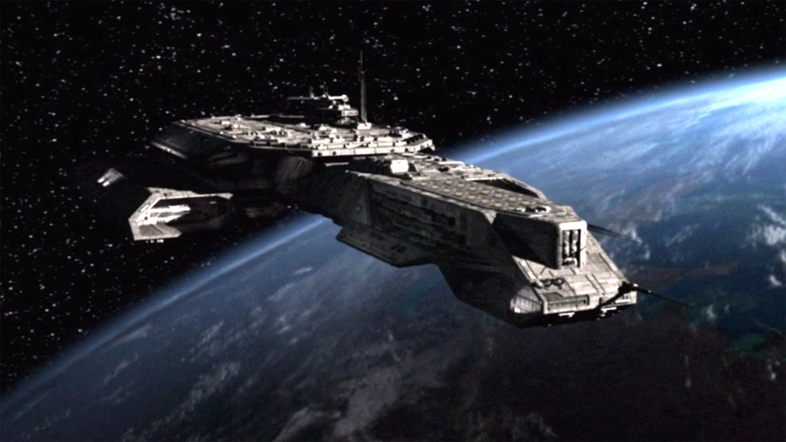

Daedalus
Popis
Druhá generace hvězdných lodí vyvinutých vojenskou silou Spojených států a jejich spojenců a průkopník bitevních křižníků třídy Daedalus (třída BC-304). Velitelem lodi byl plukovník Steven Caldwell. Jejím původním posláním bylo pomoci výpravě Atlantidy uvězněné v galaxii Pegasus a porazit konvoj Wraithských úlů, které chtěly zničit Antické město.
Vybavení
Daedalus je vyzbrojen railguny, taktickými hlavicemi Mark XIII a hangárem pro stíhačky F-302. Disponuje také štíty a transportní technologií Asgardů, ale zpočátku žádnými z jejich zbraní. Před hromadným vymíráním Asgardů byl lodi přidělen asgardský vědec Hermiod, aby dohlížel na to, aby jejich technologie nebyly zneužity. Po vyhynutí Asgardů byla loď spolu s ostatními křižníky Země vybavena pokročilou paprskovou zbraní.
Pohon se skládá ze standardních trysek a hyperprostorového motoru Asgardů, který je schopen jednosměrně cestovat mezi Zemí a Atlantidou za 18 dní. Hlavním posláním lodi je nyní přepravovat personál a zásoby ze Země na Atlantidu a poté zpět, ale Daedalus často zůstává poblíž Atlantidy nějakou dobu, než podnikne další cestu.
Nasazení
Spolu se svou sesterskou lodí Apollo byl Daedalus hlavní silou ve válce s Replikátory, vrcholící spojeneckým útokem na Asuras a zničením domovského světa Replikátorů.